2026Собрал бота и мини-эпп, чтобы хранить и слушать музыку в Telegram
Заметил проблему: в Telegram уже слушают и сохраняют музыку, но сам мессенджер почти не помогает собирать её в медиатеку. Треки теряются в избранном, чатах и каналах.
Поэтому я сделал core — бота и плеер с плейлистами
Задача
Собрать бота и мини-эпп, чтобы хранить, сортировать и слушать музыку в Telegram
Что сделал
Придумал основной пользовательский сценарий core
Отправляешь аудио боту → бот подтверждает добавление → трек появляется в core-плеере
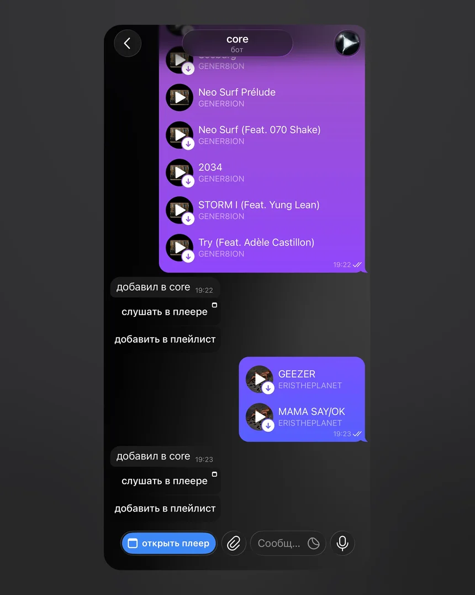
Отправляешь аудио боту и получаешь подтверждение
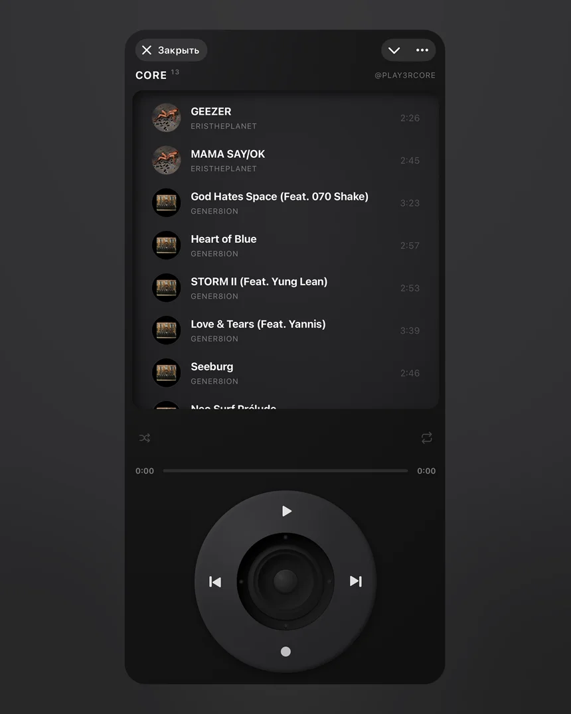
Треки появляются в треклисте
Проработал коммуникацию с ботом: сценарий, сообщения и кнопки
Базовая коммуникация
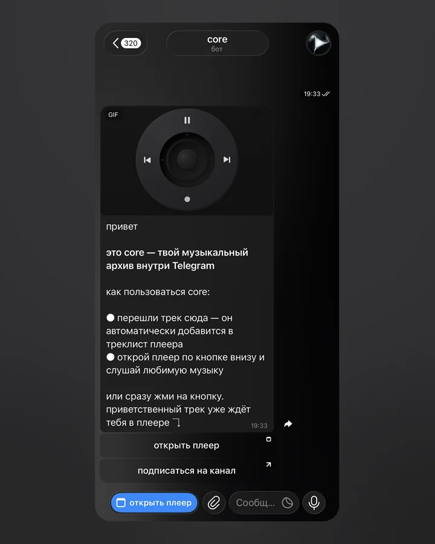
Приветствие
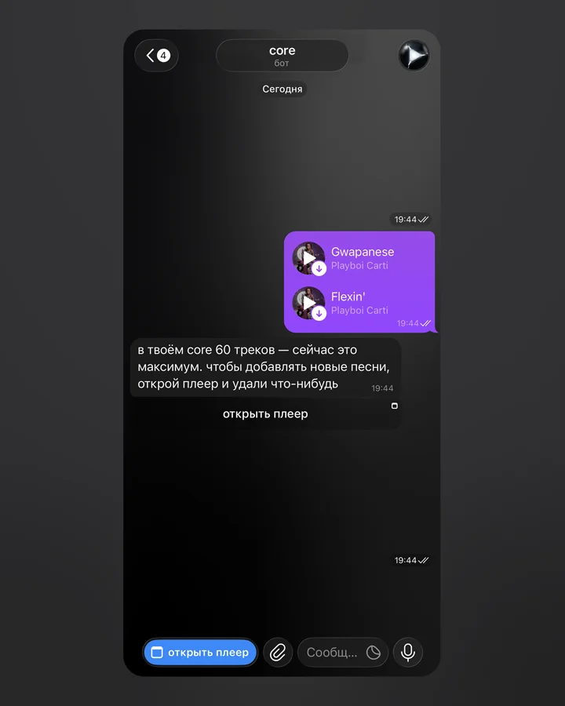
Ошибки и подсказки
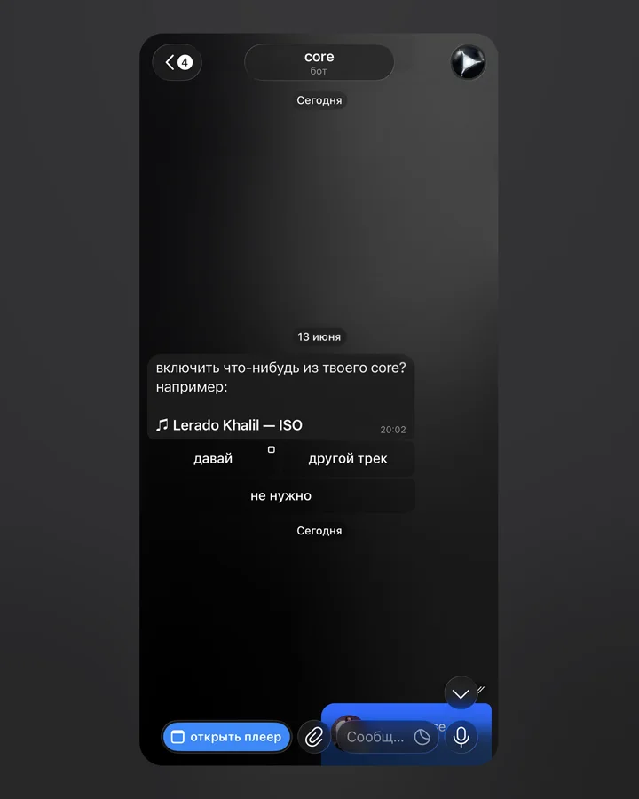
Рассылка пользователям, которые уже добавили треки
Сложные цепочки
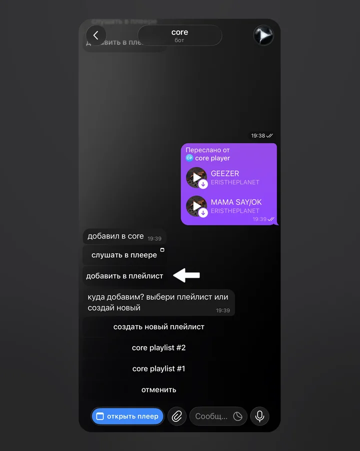
1. Выбор плейлиста: создать новый или выбрать существующий
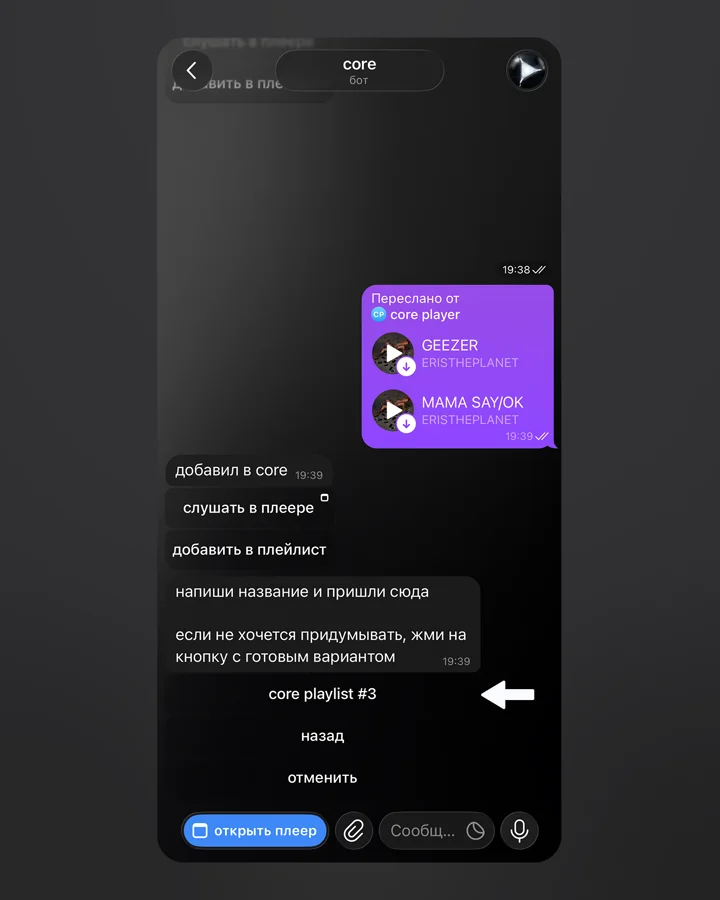
2. Создание плейлиста: своё название или готовый вариант
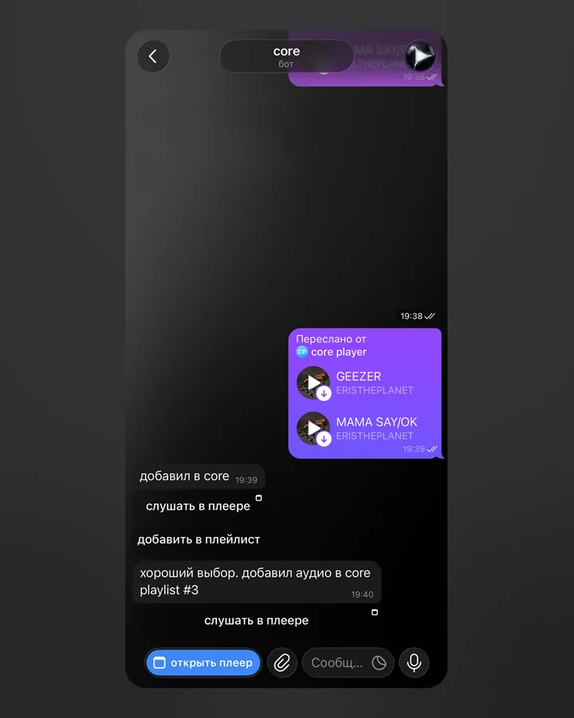
3. Подтверждение: трек добавлен в выбранный плейлист
Продумал UX плеера
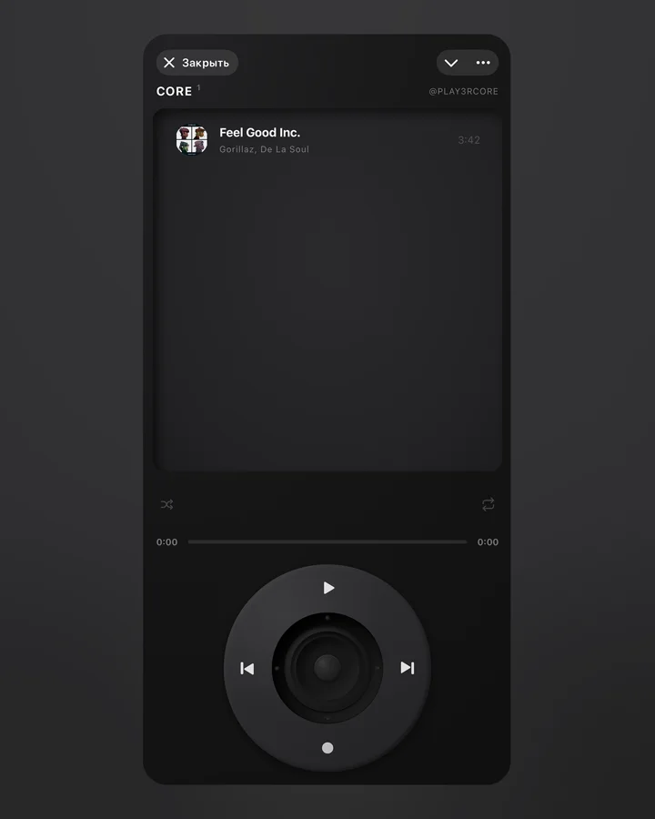
Онбординг: у каждого пользователя есть стартовый трек для быстрого погружения в продукт
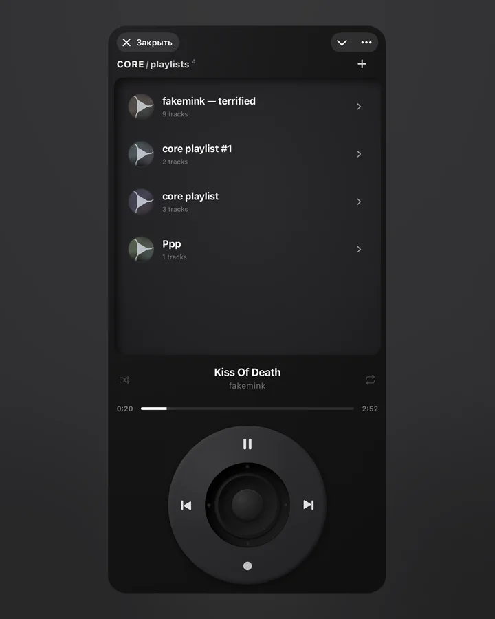
Экран плейлистов: каждый плейлист получает свою сгенерированную обложку
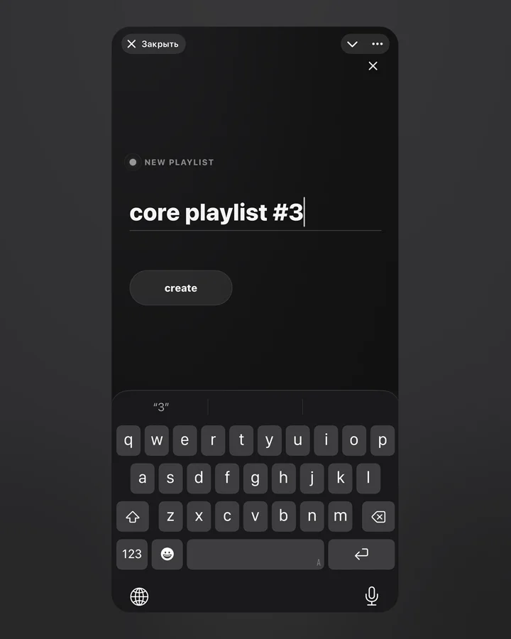
Новый плейлист: пользователь вводит своё название или оставляет готовый вариант
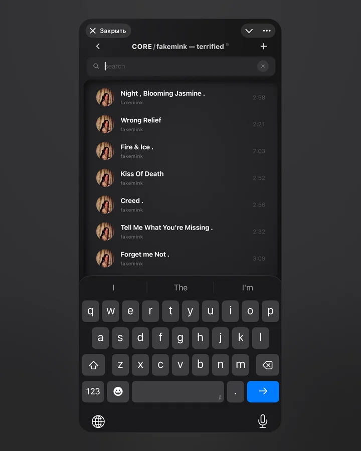
Поиск по трекам и плейлистам
Разработал визуальный стиль плеера
Культовый дизайн iPod Classic + неоморфизм + живой динамик в сердцевине iPod-колеса